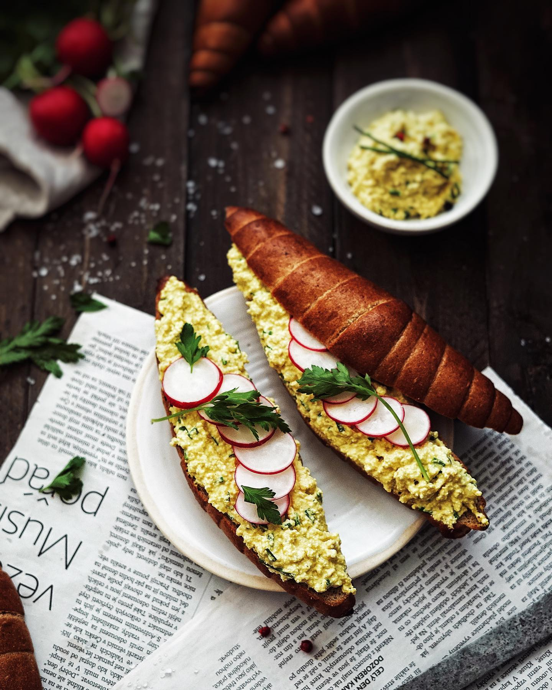

Vajíčková nátierka podľa @surovadcerka — Normy Jedál
Vegan vajíčková nátierka. 🐣Z vajíčok, ktoré zvýšili na Veľkú noc, sa robili takmer výhradne nátierky. Teraz ju už nerobím zo zvyšných vajíčok, ale napríklad vtedy, keď mi zvýši tofu alebo domáca majonéza z iných receptov. 😉A určite nielen na Veľkú noc, o ktorej vám niečo napíšem nižšie. Ak chcete dosiahnuť naozaj skvelú chuť, nakrájajte do nej aj kyslé uhorky, je to nebíčko! 🥒Táto nátierka je spolu s vegan treskou u nás v TOP2 domácich nátierok! V #Slovegán 1 kuchárke som sa na vajíčka v raňajkovej kapitole vyslovene zamerala - praženica, volské oko, vajíčková nátierka, vajíčko na tvrdo, chlieb vo vajíčku. 🍳V #Slovegán2 som pokračovala roztekajúcim molekulárnym žĺtkom, ale nájdete v nej aj citrónového barančeka, pletenec a nádievku s údeným - babu. 🍋Ak hľadáte veľkonočné recepty a vajíčka, siahnite po knihách, alebo prelustrujte môj blog. 😌
Recept na nátierku nájdete na www.dcerka.sk a v stories! Uložte si tento post do kolekcie, aby ste sa k receptu mohli vrátiť, keď vás doženie chuť kedykoľvek v roku. 😉
A teraz niečo, čo vám náladu narozdiel od dobrej nátierky nezlepší. Prichádzajúce Veľkonočné sviatky sú pre mňa každý rok... komplikované a vysielajú zmiešané signály. Veľká noc prináša vajíčka ako symbol zrodenia nového života. 🥚Nazdobené vajíčka, malé kuriatka a cute zajačiky sú všade. Rovnako aj salám, šunka, údené, jahňacina... A mne prišlo vždy veľmi zvláštne, že sme nový život a znovuzrodenie oslavovali tým, že sme zabíjali napríklad jahniatka 🐑a konzumovali v každom jedle nejaké iné zviera. Nevidím v tom oslavu života ani jari. Ako keby bolo treba dohnať, čo sa za pôstne obdobie "vymeškalo". Slovensko každý rok vyvezie viac ako 100 000 jahniat do Talianska, kde sú pred sviatkami zabité. Toto mi každý rok kazí jar viac ako šibačka, ktorej sa viem vyhnúť. Zabíjanie mláďat nevidím, ale vyhnúť sa mu zatiaľ nedá. 😔 Napriek tomu, že jar je pre mňa najobľúbenejšia ročná sezóna, neviem sa na ňu poriadne tešiť.
🍬 Ak chcete vidieť všetky moje posty, tak dajte na fotku like a ideálne nechajte aj nejaký komentár, aby ste dali IG najavo to, čo vás zaujíma. V mojom profile si môžete nastaviť aj upozornenia na všetky príspevky!🍬